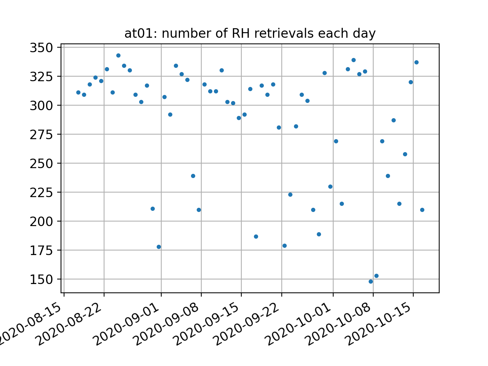

St Michael Bay

Station Name: at01
Location: St Michael, Alaska
Archive: UNAVCO
Ellipsoidal Coordinates:
Latitude: 63.4840
Longitude: -162.0064
Height: 21.7 m
Data Summary
at01 is the only tide gauge in this region of Alaska.
at01 observes all constellation signals and high-rate data are available. There is good visibility over a large azimuthal region. The monument is about a meter taller than normal geodetic monuments to improve visibility of the sea surface. From the geoid app you can see the general location of the antenna with respect to the coast. You will also note that it is at ~12 meters above sea level.

Use the gnss-reflections.org webapp to set a possible mask. In this example we used the option for elevation angles between 5 and 12 degrees.
Take a Quick Look at the Data
First examine the spectral characteristics of the SNR data. (For details on quickLook output.). Make a SNR file:
rinex2snr at01 2020 109 -archive unavco
This will generate a SNR file at a sampling rate of 15 seconds. One second data are available if you would like to use them (-rate high).
If you use the default settings with quickLook you will mistakenly think it is not a useful site. Nearly
every single retrieval is set as bad (i.e. it is gray rather than blue):

Remember that the site is 12 meters above sea level and the default restricts the reflector height region to < 6 meters. Try again using a reflector height region that includes the water surface (h1 = 8 and h2 = 15) and better elevation angles 5 and 13 degrees:
quickLook at01 2020 109 -e1 5 -e2 13 -h1 8 -h2 15
{kind=link}
Now you see good retrievals at azimuths sweeping from true north to about 220 degrees.
You will also see strong retrievals in the Lomb Scargle periodograms:
{kind=link}
This site has modern GPS signals, Galileo signal, and Glonass signals. Here are some sample results for L2C:
quickLook at01 2020 109 -e1 5 -e2 13 -h1 8 -h2 15 -fr 20

Glonass:
quickLook at01 2020 109 -e1 5 -e2 13 -h1 8 -h2 15 -fr 101

and Galileo:
quickLook at01 2020 109 -e1 5 -e2 13 -h1 8 -h2 15 -fr 205

Analyze the Data
Next we analyze data for two months in the fall of 2020. First make the SNR files:
rinex2snr at01 2020 230 -archive unavco -doy_end 290
Now set up the analysis instructions:
make_json_input at01 63.484 -162.006 21.565 -h1 8 -h2 15 -e1 5 -e2 13 -allfreq True
You will need to hand-edit the file to restrict the azimuths per our QC output. I also removed the Beidou signals (frequencies > 300) because they are not in the RINEX 2.11 file. We also removed frequency 208. Sample json file.
Next estimate reflector height (RH) for the two month time period:
gnssir at01 2020 230 -doy_end 290
We have written some code to help you look at these subdaily files - it is a work in progress, but you can certainly give it a try. Note: These figures were generated with an older version of the code and should be updated.
subdaily at01 2020 -doy1 230 -doy2 290
The code concatenates the daily RH files for this period:

You can see that there are a very large number of RH retrievals per day:
{kind=link}
This preliminary version of the code removes outliers and makes an effort
to compute the RH dot correction if rhdot is set to true. It uses a cubic
spline to fit the RH data which allows a first order estimate for the
surface rate of change. That, along with geometrical information as to the elevation angle rate
of change, is used to make the RH dot correction (for more information. This term is very important for sites with
large tidal ranges, but is of less importance at sites like at01. Nevertheless,
you can see here that it does help a bit:
RMS no RHdot correction (m) 0.082 RMS w/ RHdot correction (m) 0.070

Final view of the surface estimates:

There are some statistics here that indicate that the precision for an individual arc is ~ 5 cm. Remember that since we have nearly 300 measurements per day, the ability to measure tides with this system is much much better than that.
We are working on removing inter-frequency biases. Some of the bias is simply due to the phase center - but we also want to be be careful to take into account surface changes (ice to water, e.g.)
Freq Bias Sigma NumObs
(m) (m)
1 0.07 0.06 2751
20 -0.03 0.05 2208
5 -0.04 0.05 1592
101 0.06 0.06 1803
102 -0.03 0.05 2086
201 0.07 0.05 1164
205 -0.05 0.05 1880
207 -0.04 0.04 1864
The code also prints out a list of outliers (outliers.txt) so that you can assess whether you might want to change your azimuth mask.
Files for both the raw RH estimates and the QC/RH corrected estimates are provided (file names come to the screen).
I would like to include Simon Williams’ RH retrieval/tidal estimation code in this package. Simon has been kind enough to make the Matlab code open source. If someone is willing to convert it to python, that would be fabulous.